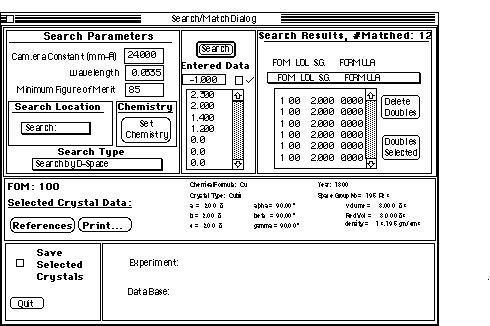

Desktop
Manual
Desktop
Manual
Search Match Tutorial
As a set of experimental d-spacings has been
obtained, the Search/Match capabilities of Desktop Microscopist will
now be examined. As previously stated, Desktop Microscopist will search
four different sets of data. The first is the set of stored Desktop Microscopist
crystals (it will not search Diffract crystals), the second is the Electron
Diffraction Database, the third is the JCPDF Powder Diffraction Data Base
and the fourth is the NBS Crystal Database. The last three databases may
be purchased through Virtual Laboratories or from a third party. Their
organization and crystal coverage is different and the user needs to determine
which database is best for the work at hand. In general, the EDD has been
optimized for standard TEM data. To search these files, .separate default
search paths are used for the different databases. To change the search
path(s), access the Search
Path Dialog Box under the file menu.
Search Chemistry:
Desktop Microscopist is most effective when the chemistry as well as some
d-space information is available. For this example, go to the Set Search
Chemistry option. A periodic
table will appear. Desktop Microscopist allows three different levels
of chemistry selection. The first is the May Be Present option. Any
element which is highlighted under this option will be allowed but will
not be required when searching the data base.
The second level of chemistry selection is Must Be Present;. Any
element which is highlighted under this option will be required when searching
the data base. If a crystal does not explicitly state that it has this element
in its composition, it will be eliminated during the search. This option
is extremely powerful and often times it is overused. Exclusion of the correct
crystal is possible. It is suggested that at most two elements are selected
under this option.
The final level of chemistry selection is arrived at by elimination, any
element which is not selected under May be or Must be present
is designated as a Cannot be present. Any crystal which contains
a Cannot be present element is eliminated by Desktop Microscopist.
For the purposes of this tour, set all elements < Na to May Be Present
+ Ti. In addition, set Al to the Must Be Present state. Activate
the Search Dialog
Box by selecting any of the three search methods: Search by D-spacing,
Search by g-vector and Search by volume under the Search/Match menu. It
is possible to switch to any of the other two methods and an additional
method (by 2-theta) within the Search Dialog Box. At this time, experimental
d-spacings (2.3 Å, 2.0 Å, 1.4 Å, and 1.2 Å) may
be input. If the EDD has been purchased, activate and search both the EDD
and the Desktop Microscopist Crystals. Set the FOM (Figure of Merit) to
85 and search the data base. The Figure of Merit is a weighting function
to determine the press frequency of the d-space values. The lower d-space
values are given more weight.

Search Dialog Box
When the search is completed, the experimental d-space values may be compared
to the database values by clicking on the Pop-up menu just below the experimental
and matched list. Select the Al crystal values. They should match in a reasonable
fashion. The Found Crystal Pop-up Menu contains the following information:
The FOM;, the reduced crystal volume, the space group number, the space
group and the crystal chemistry.
Additional comments:
To transfer crystals of interest to the main program, click on the Save
Selected Crystals check box and select the desired crystals. Quitting the
search dialog box will create a list of the selected crystals below the
Search/Match Menu. A comparison ring pattern of any of these crystals is
shown when the crystal under this menu is selected. Holding the shift key
down (in the main menu) will bring up a Crystal Definition Dialog Box. Use
the Load button to insert the crystal into any of the four main crystals.
All found crystals can be transferred by simply quitting without using the
Save Selected Crystals check box. The complete list of found crystals will
now appear below the Search/Match Menu.
Tour Conclusion:
Upon the conclusion of this tour, the user now has a basic idea of the power
and capabilities of Desktop Microscopist. Only a small portion of Desktop
Microscopists abilities have been touched upon in this short tour. However,
many of the basics and the basic understandings about how to utilize Desktop
Microscopist have been covered. The following section details all the primary
features of Desktop Microscopist and gives more insight into the concepts
of Default parameters, Search/Match and experimental parameters. The next
two sections detail every command available in Desktop Microscopist from
Menu Items and Dialog
Box.
Program Structure->:
Author:James T. Stanley J.
Stanley
Desktop
Manual
Distributed By: Virtual
Labs
Last Updated:June 6,1996